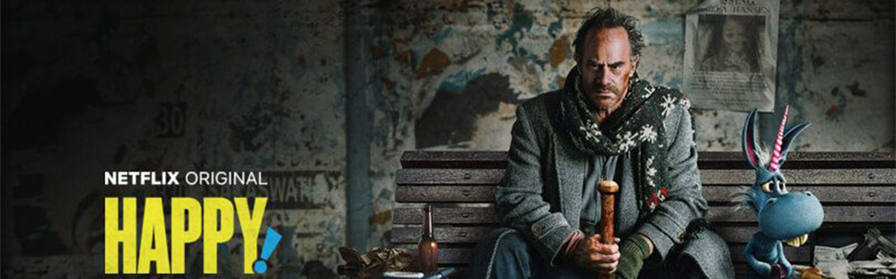
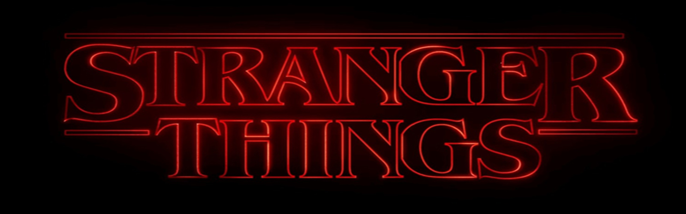

El mejor sitio para ver y descargar series.
Ultimas series agregadas.
Walter White un profesor de química de secundaria agobiado por problemas económicos para sostener a su familia y con un cáncer terminal, toma una decisión para ganar dinero y transforma un viejo vehículo en un laboratorio de metanfetaminas rodante.
Un corrupto expolicía llamado Nick Sas cambia para siempre cuando entra en escena un implacablemente positivo e imaginario caballo de alas azules de nombre Happy.
Harto del infierno, Lucifer abandona su trono en el averno y se marcha a Los Ángeles, donde empieza a trabajar como detective de homicidios.
Después de haber estado desaparecido durante casi 20 años, Rick Sánchez llega de imprevisto a la puerta de la casa de su hija Beth y se va a vivir con ella y su familia utilizando el garaje como su laboratorio personal.
BoJack Horseman es un olvidado actor que supo vivir sus días de gloria gracias a una comedia televisiva, y que se enfrenta a las más duras crisis existenciales y adicciones mientras intenta volver a las grandes ligas.
En Springfield, los Simpson, una familia de clase trabajadora compuesta por Marge, Homero, Bart, Lisa y Maggie, vive aventuras satíricas.
Cuando un niño desaparece, sus amigos, la familia y la policía se ven envueltos en una serie de eventos misteriosos al tratar de encontrarlo. Su ausencia coincide con el avistamiento de una criatura terrorífica y la aparición de una extraña niña.
La desaparición de dos niños muestra los vínculos entre cuatro familias y expone el pasado de una pequeña ciudad.

El astronauta Gary y su ayudante destructor de planetas Mooncake viajan por el espacio para encontrar dónde termina el universo.
Mas series proximamente...